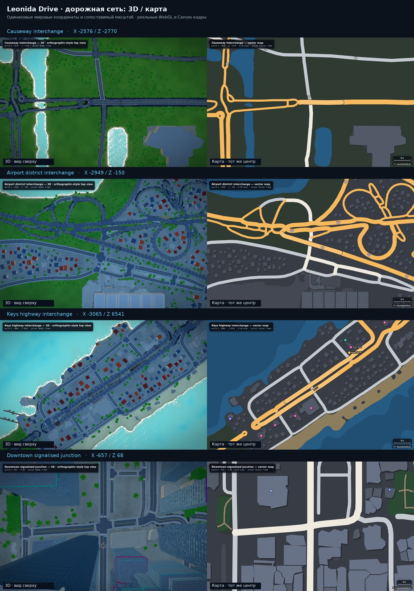
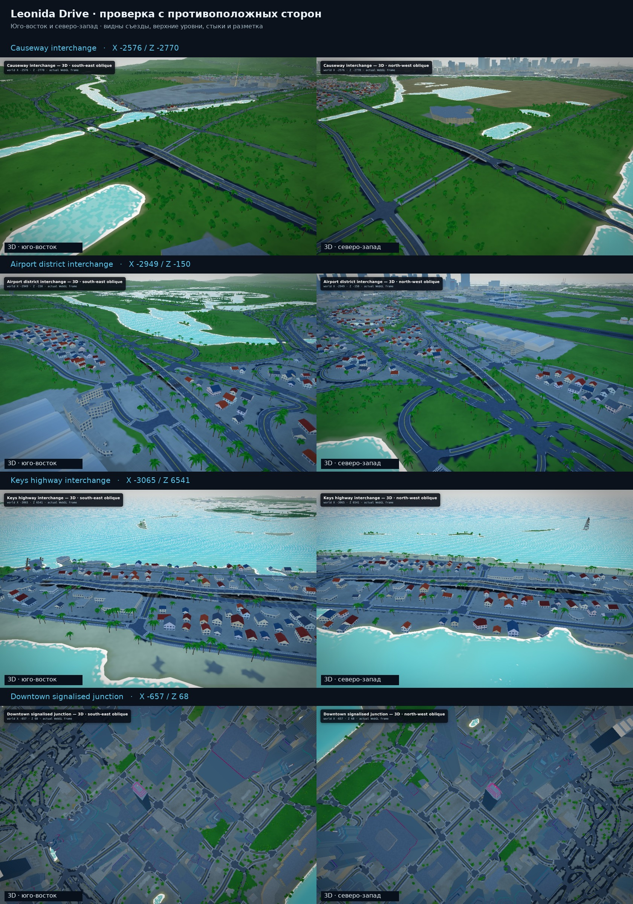

Дороги, развязки и перекрёстки
16 исходных кадров реального запущенного проекта · YANIS v17 · без дорисовки дорожной геометрии


Исходные кадры · 1440 × 900
Causeway interchange
X -2576 · Z -2770 · 0.46 m/px
Airport district interchange
X -2949 · Z -150 · 0.46 m/px
Keys highway interchange
X -3065 · Z 6541 · 0.46 m/px
Downtown signalised junction
X -657 · Z 68 · 0.25 m/px